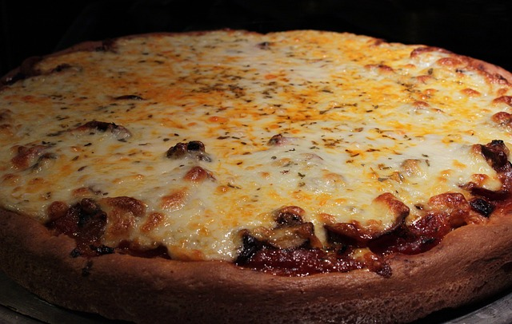

"This is not pizza! This is tomato soup in a bread bowl! This is an above-ground marinara swimming pool for rats!" - Jon Stewart
It's safe to say Chicago's famous deep dish pizza isn't without its detractors. However, despite all of this, there are many out there who believe Chicago, not New York, has the best pizza. Deep dish pizza was invented in Chicago in the 1940s and is characterized by its deep, buttery crust, its many layers of sauce, cheese, and toppings, as well as the fact that it is baked in a cast iron skillet. Controversy aside, it's a worthy competitor, and a very unique take on an old classic.
Recommended Chicago pizzerias: Lou Malnati's, Pequod's Pizza, Gino's East
Pros
- A full meal. One slice and you'll be stuffed for hours!
- More cheese. And what could be bad about that??
- Much less oily than a typical New York slice
- Potential for a thicker layer of toppings

Cons
- Extremely filling. Sits like a brick in your stomach.
- Messier and difficult to eat without a knife and fork
- Takes significantly longer to cook
- More calories and carbohydrates